A preview of Matt Graham’s Leap Day Theme
This is a live preview of one of the themes bundled with gh-themes-magick:
VERSION: 2.0
PANDOC: 2.1.1
STATUS: 5/12 themes portedgh-themes-magick exploits pandoc’s super-powers to convert your repo’s README.md file to a docs/index.html themed file. Your are basically getting a copy of the same themes found on GitHub Page Generator, plus a pandoc html5 template for each theme, and scripts to auto-magically convert/update your project’s single-page website contents from the README.md file in your repo’s root.
This means that now you can:
/docs/ folder on your master branch .README.md file, with a single click.Now gh-themes-magick was updated to work with pandoc v2; so it now supports GitHub Flavored Markdown’s Task-Lists, thanks to the pandoc Lua filter task-list.lua:
v2.x
v1.x
You can use theme previews to experiment locally with themes, styles and customizations before publishing your website. This page is auto-generated from the README.md file in its parent folder:
/gh-themes-magick/gh-themes/README.mdAll theme previews are built from the same README file.
To update a theme’s html preview, run the abracadbra script within its folder (abracadbra.sh under Linux, abracadbra.bat under Windows). To update all theme previews at one, run global-spell.bat (Windows only).
To use a theme in your project:
/themes/ foldermaster branchdocs (eg: from dinky)/docs/configuration.yaml file/docs/abracadabra script to build/update the website/docs/index.htmlKeep editing your /README.md file and going through these last three steps until your ready to publish.
NOTE: Keep in mind that relative links will yeld different results in
/README.mdand its/docs/index.htmlcounterpart — test well before publishing.
When you are satisfied with your local preview of the website:
master
The first time you publish, you’ll also need to:
master branch /docs folder
(Click here to view GitHub’s Help on how to configure a publishing source for GitHub Pages)
HOW DOES THIS HAPPEN/WORK?
Your repo is now set to publish the project’s website from master branch /docs/ folder. The /docs/ folder is just the chosen theme’s folder renamed.
The /docs/abracadabra script invokes pandoc to convert ../README.md (ie: the README.md file in the parent folder) to ./index.html (ie: to /docs/index.html) — which is your single-page website’s index.
These are the key files of the repository:
/docs/ <= Theme folder renamed (eg: was 'dinky').
/docs/abracadabra.bat <= Window script for building website.
/docs/abracadabra.sh <= Linux version of website building script.
/docs/index.html <= Website page built from '/README.md'.
It’s updated every time you run the
'abracadabra' script.
/README.md <= Repo’s README, the website will mirror its
contents in 'index.html'.Currently, 5 of the 12 themes (layouts) available on GitHub Page Generator have been ported to gh-themes-magick. More themes will be ported soon.
Click on a theme’s thumbnail to see its live preview:
Architect |
|---|
| by Jason Long |
| 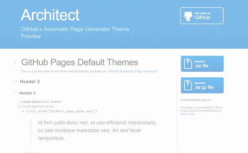 |
| CC-BY 4.0 |
Cayman |
|---|
| by Jason Long |
| 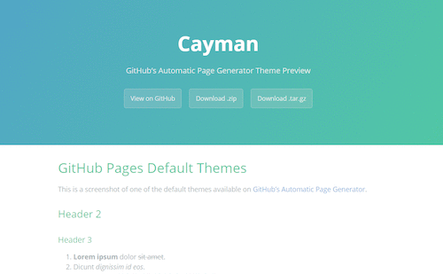 |
| CC-BY 4.0 |
Dinky |
|---|
| by Diana Mounter |
| 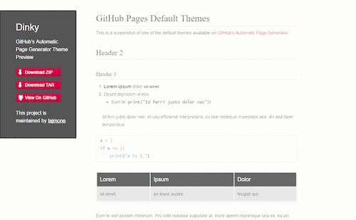 |
| CC-BY 3.0 |
Leap Day |
|---|
| by Matt Graham |
| 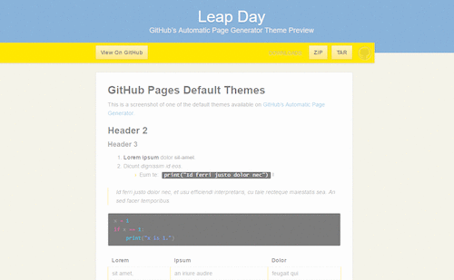 |
| CC BY-SA 3.0 |
Merlot |
|---|
| by Cameron McEfee |
| 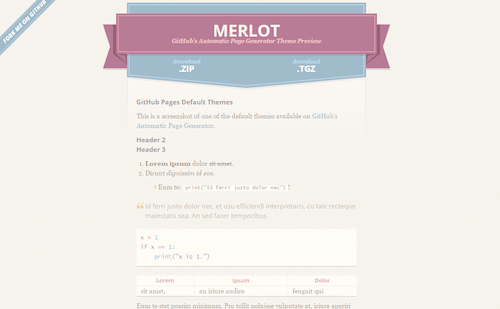 |
| MIT |
The following themes are in the work queue, waiting to be ported. (Click on a theme’s thumbnail to visit its project page.)
Midnight |
|---|
| by Matt Graham |
| 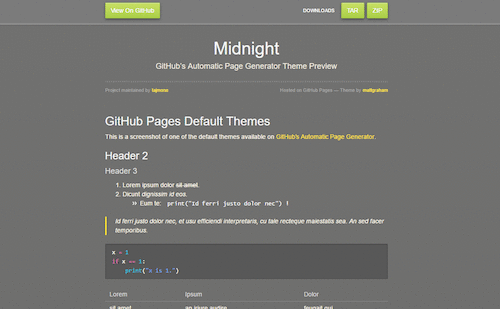 |
| CC-BY 3.0 + MIT |
Minimal |
|---|
| by Steve Smith |
| 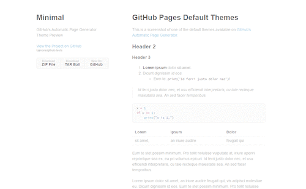 |
| CC BY-SA 3.0 |
Modernist |
|---|
| by Steve Smith |
| 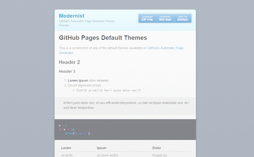 |
| CC BY-SA 3.0 |
Slate |
|---|
| by Jason Costello |
| 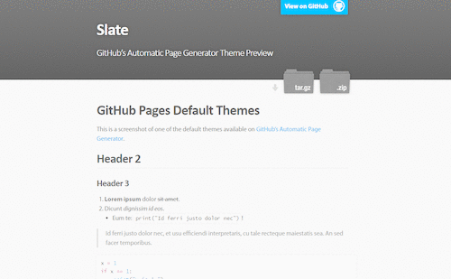 |
| MIT |
Tactile |
|---|
| by Jason Long |
| 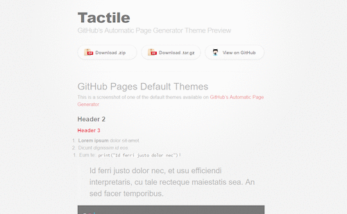 |
| CC-BY 4.0 |
These last two themes will not be ported into gh-themes-magick — the first one’s sources are not available for sharing, the other has no FOSS license attached to its project.
Hack |
|---|
| by Ben Bleikamp |
| 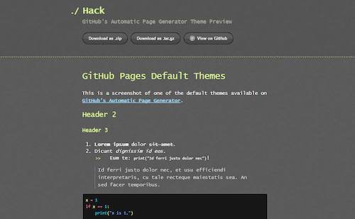 |
| — no source code found — |
| license unknown |
Time Machine |
|---|
| by Jon Rohan |
| 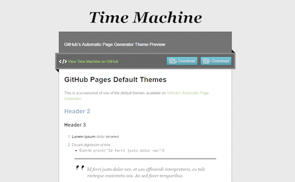 |
| copyrighted |
To configure your project’s website all you have to do is fill-in the variable fields of a single configuration file inside the theme’s folder:
configuration.yaml
It’s all rather self-explaining and intuitive; nonetheless, instructions are provided in comment lines. Here is how the config file looks like:
---
# ^ DON'T REMOVE the "---" above!
# ==============================================================================
# WEBSITE HEADER
# ==============================================================================
# These variables are shown in the website header.
# ------------------------------------------------------------------------------
website_title: 'This is the Title shown in the Web page'
website_tagline: 'This is the tagline below the Website Title'
# ==============================================================================
# GITHUB LINKS
# ==============================================================================
# The following variables are used for automagically creating links to your repo
# on GitHub, and for the .zip and .tar download links.
# Substitute sample values with your username and repository name as they appear
# on GitHub (CASE SENSITIVE!!!)
# ------------------------------------------------------------------------------
# Example: https://github.com/tajmone/gh-themes-magick
your_github_username: tajmone
your_github_reponame: gh-themes-magick
# ==============================================================================
# HTML META
# ==============================================================================
# HTML Metadata -- for <head> section
# If you don't need a variable, delete its line or comment it out with a `#`!
# ------------------------------------------------------------------------------
title: 'Dinky Theme — As shown in browser tab and bookmarks'
lang: en
date: December 12, 2016
author:
- Tristano Ajmone
- Collaborator Name
- Another Collaborator
description: 'Your project description, to be shown in search engines results.'
keywords:
- your
- keywords list
- for
- search engines
- indexing
# ==============================================================================
# EXTRA CSS STYLESHEETS
# ==============================================================================
# An optional list of extra CSS stylesheets to include from the "/stylesheets/"
# theme's subfolder. Just place your custom stylesheets in that folder and add
# their filenames to this list.
# DON'T USE ABSOLUTE URLs (ie: "https://" or "http://")!!! If you do it, the
# template will break badly. For includind CSS files with absolute URLs, use the
# "header-includes:" scalar instead (see below).
# ------------------------------------------------------------------------------
css:
- your_custom.css
- another_stylesheet.css
# ==============================================================================
# CUSTOM HTML TO INJECT IN HEADER
# ==============================================================================
# This optional indented block literal scalar can be used to inject (verbatim)
# raw html at the end of the head section, just before the closing </head> tag.
# This can be used to include CSS with absolute URLs, or JavaScript files -- or
# anything you want, without actually editing the template file.
# ------------------------------------------------------------------------------
header-includes: |
<!-- anything you put here will go verbatim in the header section
Useful for adding javascripts, custom metadata, and so on... -->
# ******************************************************************************
# * INSERT BEFORE BODY *
# ******************************************************************************
# You can inject some extra contents after the opening <body> tag and before the
# contents of your 'README.md' file. It will be parsed as markdown and converted
# to html by pandoc. Use raw html if you need advanced features, but remember
# that all loose text will be enclosed in <p> tags -- wrap it inside a <div> if
# you don't want it parsed as markdown!
# ------------------------------------------------------------------------------
include-before: |
<!-- anything you put here will go before the opening <body> tag
(ie: before the README’s contents) Markdown will become HTML -->
# ******************************************************************************
# * INSERT AFTER BODY *
# ******************************************************************************
# You can also inject extra contents after those of your 'README.md' file and
# before the closing </body> tag. Same rules as for 'include-before' variable.
# ------------------------------------------------------------------------------
include-after: |
<!-- anything you put here will go before the closing </body> tag
(ie: after the README’s contents) Markdown will become HTML -->
---
# Injected Text
This paragraph, the preceding heading and horizontal ruler were defined in
the `include-after` string variable inside the YAML configuration file.
They were injected after the contents of the `README.md` file, and before
the closing `</body>` tag.
# ------------------------------------------------------------------------------
# DON'T REMOVE the "..." below:
...gh-themes-magick uses highlight.js browser library for highlighting code blocks.
Each theme comes with a custom prebuilt version of highlight.js (9.12.0) with 24 commonly used languages:
| 1. Apache | 13. JavaScript |
| 2. Bash | 14. Makefile |
| 3. C# | 15. Markdown |
| 4. C++ | 16. Nginx |
| 5. CSS | 17. Objective-C |
| 6. CoffeeScript | 18. PHP |
| 7. Diff | 19. Perl |
| 8. HTML, XML | 20. Python |
| 9. HTTP | 21. Ruby |
| 10. Ini | 22. SQL |
| 11. JSON | 23. Shell Session |
| 12. Java | 24. YAML |
Here are some syntax highlighting previews…
Apacheconf
# rewrite`s rules for wordpress pretty url
LoadModule rewrite_module modules/mod_rewrite.so
RewriteCond %{REQUEST_FILENAME} !-f
RewriteCond %{REQUEST_FILENAME} !-d
RewriteRule . index.php [NC,L]
ExpiresActive On
ExpiresByType application/x-javascript "access plus 1 days"
Order Deny,Allow
Allow from All
<Location /maps/>
RewriteMap map txt:map.txt
RewriteMap lower int:tolower
RewriteCond %{REQUEST_URI} ^/([^/.]+)\.html$ [NC]
RewriteCond ${map:${lower:%1}|NOT_FOUND} !NOT_FOUND
RewriteRule .? /index.php?q=${map:${lower:%1}} [NC,L]
</Location>C++
/* make cpp win deterministically over others with C block comments */
cout << endl;
#include <iostream>
int main(int argc, char *argv[]) {
/* An annoying "Hello World" example */
for (auto i = 0; i < 0xFFFF; i++)
cout << "Hello, World!" << endl;
char c = '\n';
unordered_map <string, vector<string> > m;
m["key"] = "\\\\"; // this is an error
return -2e3 + 12l;
}CSS
@font-face {
font-family: Chunkfive; src: url('Chunkfive.otf');
}
body, .usertext {
color: #F0F0F0; background: #600;
font-family: Chunkfive, sans;
}
@import url(print.css);
@media print {
a[href^=http]::after {
content: attr(href)
}
}diff
Index: languages/ini.js
===================================================================
--- languages/ini.js (revision 199)
+++ languages/ini.js (revision 200)
@@ -1,8 +1,7 @@
hljs.LANGUAGES.ini =
{
case_insensitive: true,
- defaultMode:
- {
+ defaultMode: {
contains: ['comment', 'title', 'setting'],
illegal: '[^\\s]'
},
*** /path/to/original timestamp
--- /path/to/new timestamp
***************
*** 1,3 ****
--- 1,9 ----
+ This is an important
+ notice! It should
+ therefore be located at
+ the beginning of this
+ document!
! compress the size of the
! changes.
It is important to spellHTML
<!DOCTYPE html>
<title>Title</title>
<style>body {width: 500px;}</style>
<script type="application/javascript">
function $init() {return true;}
</script>
<body>
<p checked class="title" id='title'>Title</p>
<!-- here goes the rest of the page -->
</body>.ini
; boilerplate
[package]
name = "some_name"
authors = ["Author"]
description = "This is \
a description"
[[lib]]
name = ${NAME}
default = True
auto = no
counter = 1_000Python
@requires_authorization
def somefunc(param1='', param2=0):
r'''A docstring'''
if param1 > param2: # interesting
print 'Gre\'ater'
return (param2 - param1 + 1 + 0b10l) or None
class SomeClass:
pass
>>> message = '''interpreter
... prompt'''include-after string variable inside the YAML configuration file. They were injected after the contents of the README.md file, and before the closing </body> tag.